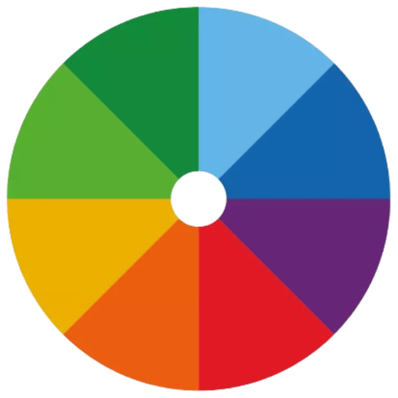

Paleta de Cores: #8AC898 – Um verde médio suave, #539D63 – Um verde musgo moderado, #E4F2E7 –
Um verde acinzentado quase branco, #E7F2E4 – Um verde esbranquiçado com um leve tom pastel, #0A4817 – Um verde escuro intenso.
Círculo Cromático
O Círculo Cromático é uma ferramenta essencial no design gráfico, que organiza as cores em um círculo para mostrar como elas se relacionam. Funciona como um mapa das cores, ajudando a escolher combinações que ficam bonitas juntas. Ele é formado por cores primárias, secundárias e terciárias, que podem ser misturadas para criar combinações harmoniosas, como se fosse um time onde cada cor tem um papel importante para deixar tudo equilibrado e agradável aos olhos.

Harmonias Cromáticas
As harmonias são combinações de cores que ficam bonitas e equilibradas juntas, como se fossem times bem treinados,
onde cada cor tem um papel para deixar o visual harmonioso. Existem inúmeras formas de combinar cores e deixá-las agradáveis, mas as principais são:
Monocromática: Usa diferentes tons da mesma cor, como se fosse um degradê de azul claro até azul escuro.
Complementar: Junta duas cores que são opostas no círculo de cores, como azul e laranja, criando um contraste forte e marcante.
Análoga: Escolhe cores vizinhas no círculo de cores, como verde, amarelo e laranja, criando uma sensação suave e harmoniosa, como um pôr do sol.
Triádica: Usa três cores bem espaçadas no círculo de cores, como vermelho, azul e amarelo, criando uma combinação equilibrada e vibrante.
Complementar Dividida: Escolhe uma cor e, em vez da sua oposta direta, usa as duas cores ao lado da oposta, criando um equilíbrio. É como um acorde musical com variações.
Quádrupla: Usa quatro cores igualmente distantes no círculo de cores, formando um equilíbrio dinâmico e rico, como um coral de vozes bem afinado.
Monocromática: Perfeita para um visual simples e elegante, ótimo para estilos minimalistas.
Complementar: Usa cores bem diferentes para criar destaque e impacto, ideal para chamar a atenção.
Análoga: Suave e harmoniosa, ótima para criar um visual tranquilo e agradável.
Triádica: Mistura três cores equilibradas para um efeito vibrante e dinâmico.
Complementar Dividida: Para dar um bom contraste sem exagerar, mantendo equilíbrio no design.
Quádrupla: Usa quatro cores para um efeito rico e sofisticado, ótimo para detalhes complexos.
Relação entre os Elementos do Site
A escolha das cores para os elementos do site deve seguir algumas diretrizes
para garantir uma identidade visual coerente, acessível e agradável para os usuários. Vamos dar uma olhada em como os elementos
do site podem ser estilizados para seguir a harmonia cromática da página.
Mantenha a consistência: Use as cores de forma padronizada em botões, links e seções para criar uma navegação intuitiva.
Cabeçalhos: Devem se destacar, como o uniforme principal do time, chamando a atenção.
Parágrafos: Precisam ser fáceis de ler, como um fundo discreto, sem distrações.
Bordas: Devem ser sutis, como um detalhe na parede, sem roubar a cena.
Links: Precisam se destacar do fundo, como botões brilhantes em um controle, fáceis de encontrar.
Tabelas: Alternar cores ajuda a organizar os dados, como listras em uma camisa, deixando tudo mais claro.
Exemplos de Ferramentas
Para faciliar, alguns desenvolvedores disponibilizaram algumas tecnologias para escolher paletas de cores que
combinem com harmonias especificas, por exemplo:
Material Design Color Tool: Oferece cores dentro do padrão Material Design, garantindo um visual moderno e funcional.
Adobe Color: Como um laboratório de cores, onde você pode criar e explorar combinações personalizadas.
Paletton: Ajuda a encontrar cores que combinam bem, como um estilista escolhendo roupas harmoniosas.
Color Hunt: Significa "Caça de cores". Um catálogo de paletas prontas, perfeito para quem quer escolher sem precisar criar do zero.
Coolors: Funciona como um dados de cores, gerando paletas aleatórias ou ajustadas ao seu gosto.
Canva Color Palette Generator: Extrai cores de imagens, como um extrator de essência, transformando fotos em paletas.